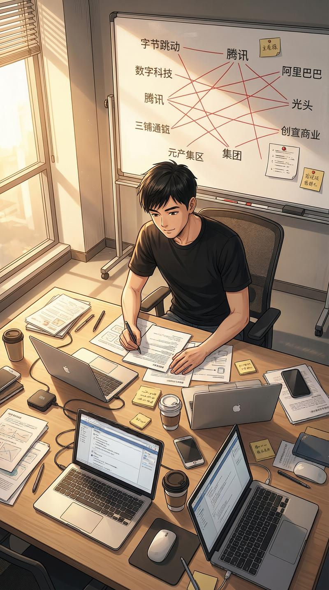
【俯拍 / 办公桌全景 / 深圳南山科技园·清晨】
清晨六点，我已经在白板前画了两小时。
赵鸿渊的目标客户名单——五家深圳中小型科技公司。我用红线把它们串成一张网，在每个公司名字旁边标注了他们最可能的痛点。
要抢在魔修之前，把这些公司变成我的客户。
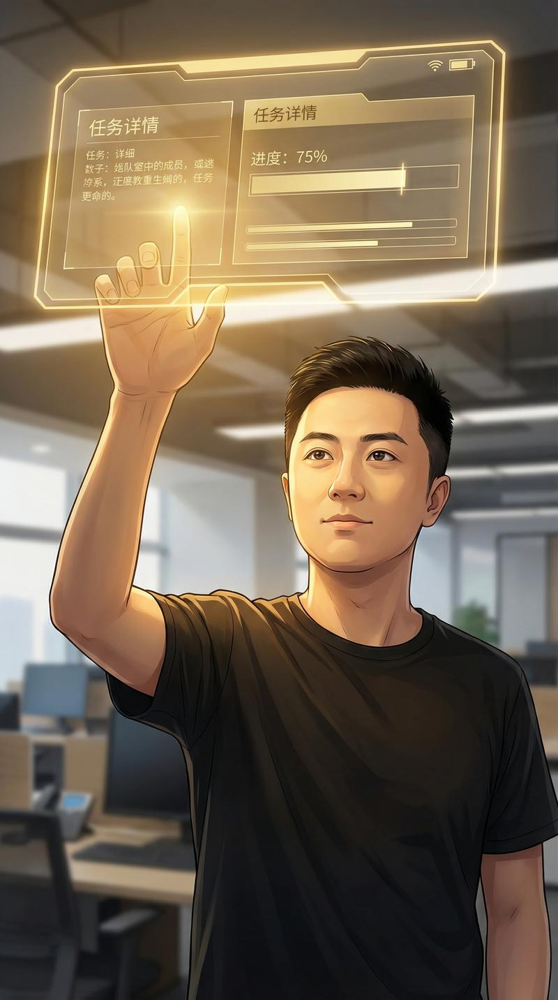
【仰视 / 系统HUD弹窗】
空气中凭空亮起一块半透明金色面板——系统发来新任务：
筑基期……如果能突破，我的灵气感知范围和商业直觉次数都会翻倍。但失败的代价是回到凡人——等于系统白给。
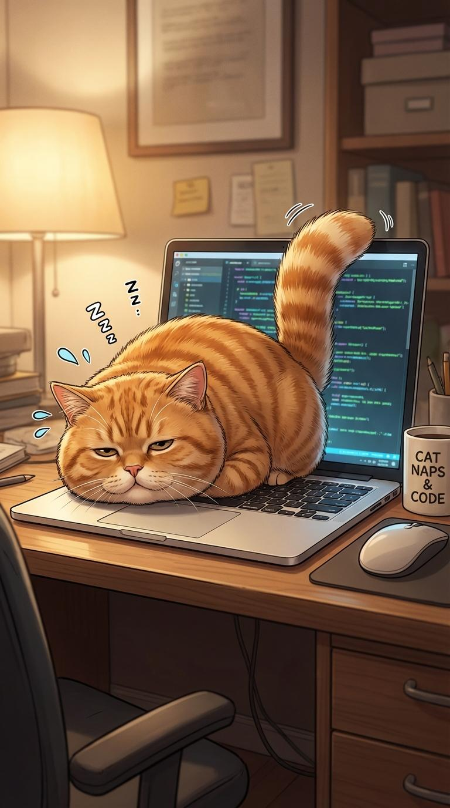
【中景特写 / 笔记本电脑】
大橘趴在我的键盘上打呼噜。尾巴精准地盖住了屏幕的右半边——刚好遮住我正在分析的客户数据。
……这猫是故意的。
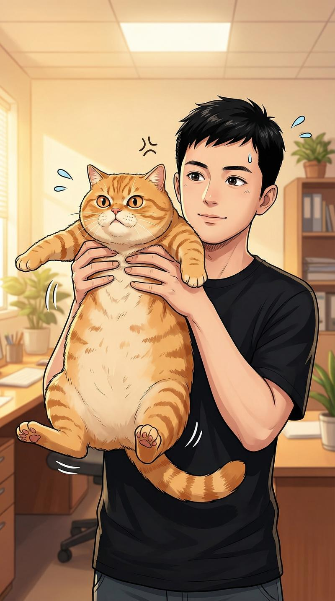
【侧面 / 中景】
我双手把大橘从键盘上拎起来。它四肢僵直悬在空中，给了我一个"你完了"的眼神。
你知道灵兽每天需要十四个小时睡眠吗？你在剥夺我的基本猫权。
灵兽……你昨天吃了三罐猫粮，凡猫都吃不了那么多。
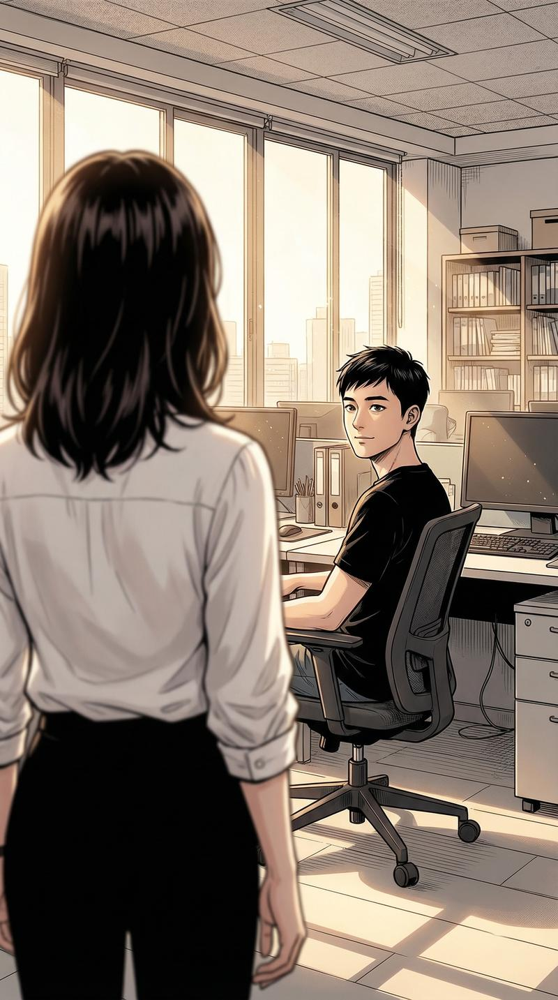
【过肩镜头 / 林晚晴视角看向朱江】
林晚晴出现在办公室门口。白衬衫扎进黑西装裤，干练得像是这间破公司里唯一靠谱的人。
你怎么比我还早？白板上画的什么？
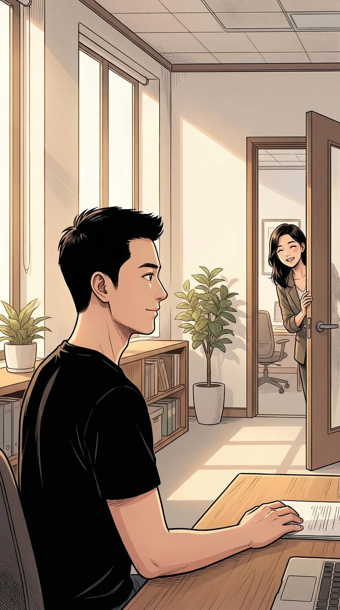
【侧面 / 中景 / 朱江转身】
我回头看她，斟酌了一下措辞。我不能告诉她"修仙系统"的事——说出来她一定觉得我疯了。
发现了新机会。鸿蒙资本有几个目标客户，我想先下手。
林晚晴挑了挑眉，没追问。她很聪明，知道什么时候不该多问。
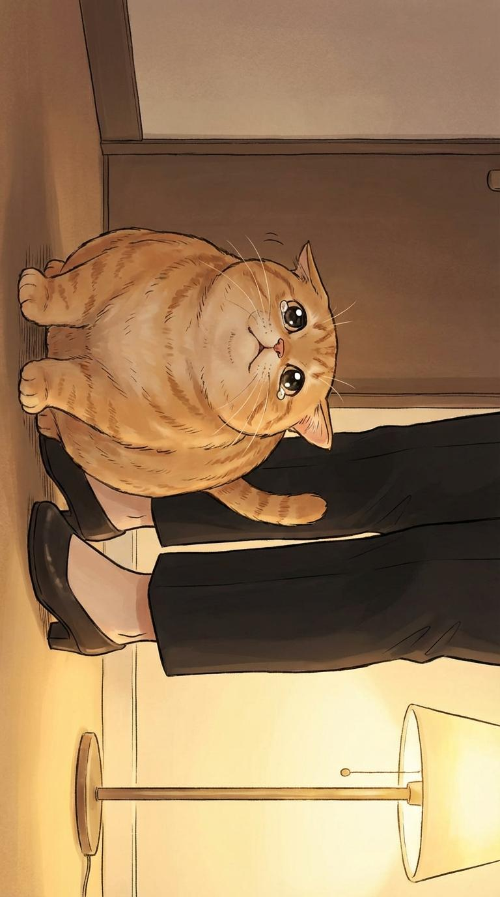
【低角度仰拍 / 大橘特写】
大橘从我怀里挣脱，径直跑到林晚晴脚边蹭来蹭去。那个讨好的姿态，我都看不下去。
然后它仰头冲我悄悄说——当然只有我听得见：
你就不能学学我，主动一点？
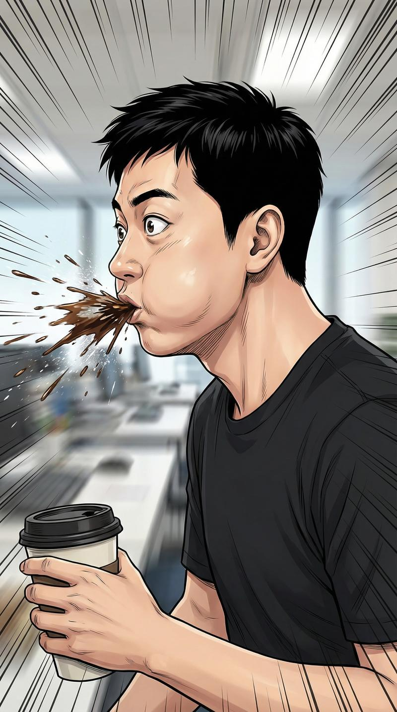
【侧面特写 / 动态】
我差点把嘴里的咖啡喷出来。
……这死猫。在我面前聊天记录都不加密的吗？
林晚晴疑惑地看了我一眼。我假装呛到了，拍着胸口咳了两下。
【微距特写 / 咖啡杯倒影】
咖啡杯里倒映着办公室的灯光，波纹还没散。
72小时。3家客户。筑基。
行，干了。
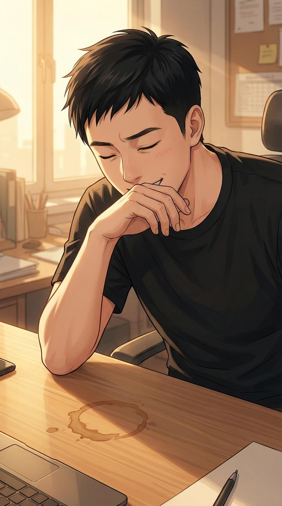
【中景 / 朱江擦嘴】
我擦了擦嘴角的咖啡渍，露出一个无奈的笑。
大橘还在林晚晴脚边打滚。我决定不理它。
打开手机地图，定位第一个目标——南山区蛇口的「速达仓储」。
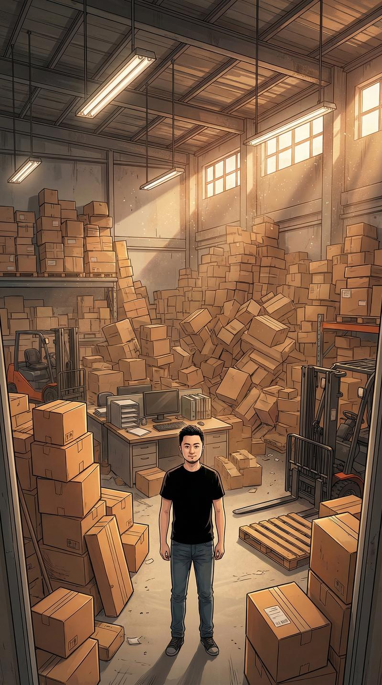
【远景 / 速达仓储入口 / 物流箱堆积如山】
速达仓储。
我站在门口，被眼前的景象震住了——物流箱堆成三层楼高的小山，叉车在缝隙间穿行，几个工人在拣货架上跑来跑去。
这就是它的痛点——仓储调度效率。人工跑单的时代，用AI能把它翻几倍。
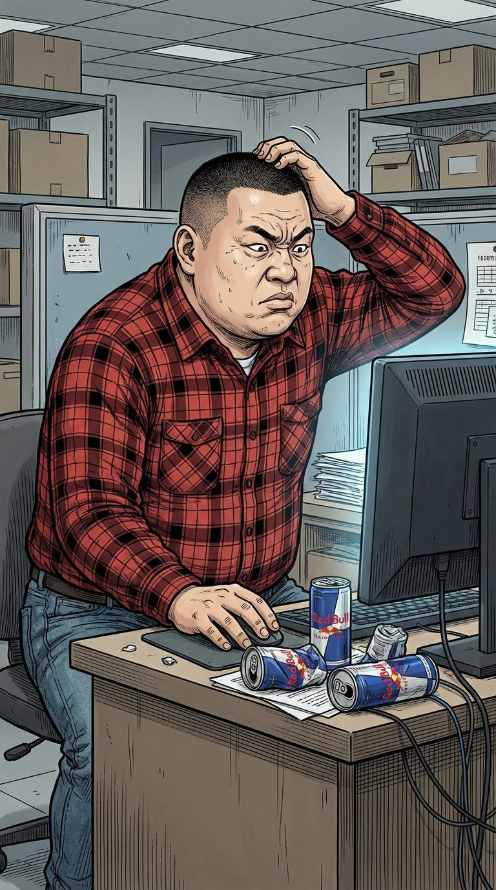
【中景 / 马磊出场】
速达仓储CEO——马磊。
东北大哥，圆脸微胖，穿着红格子衫。桌上堆着六七个红牛空罐，头发被自己抓得像鸡窝。
你就是朱总？快坐快坐——别介意啊，昨晚通宵到现在，仓库又爆了三次单。
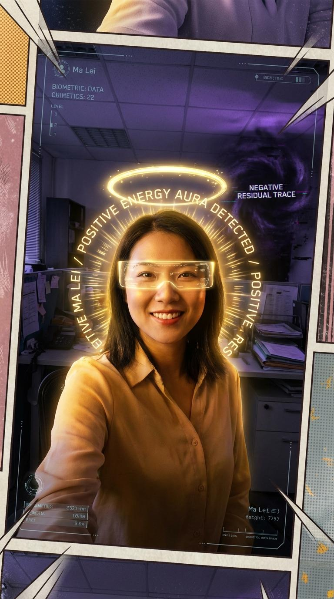
【第一视角 / 灵气感知启动】
我悄悄启动「灵气感知」——马磊头顶的金色灵气亮得刺眼。
灵气匹配度极高……说明他的需求和我的产品几乎完美对口。
但我同时注意到办公室角落——一缕黑色灵气的残留。冰冷、带着侵蚀感。
赵鸿渊的人已经来过了。
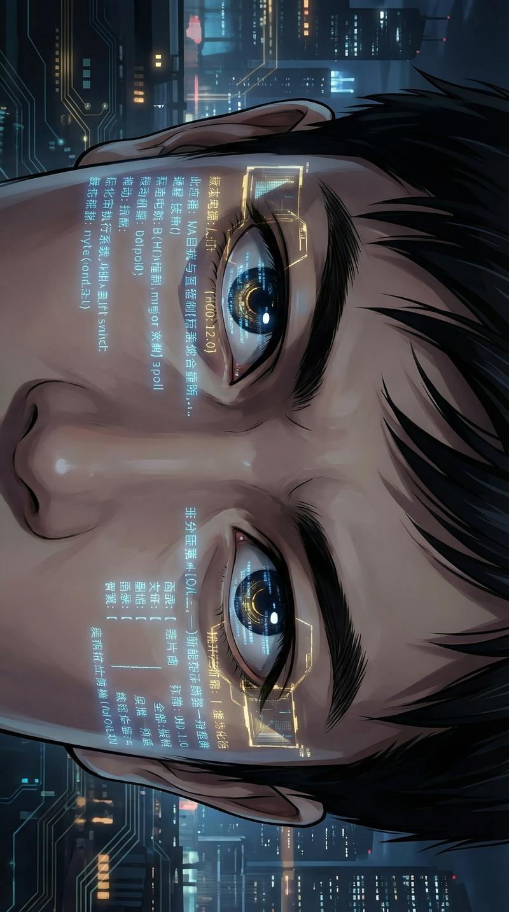
【特写 / 眼部+数据流】
我启动了今天第一次「商业直觉」，读取马磊近期收到的offer。
数据像瀑布一样在我眼前展开——
用户数据就是他们的"灵气来源"……免费只是诱饵。
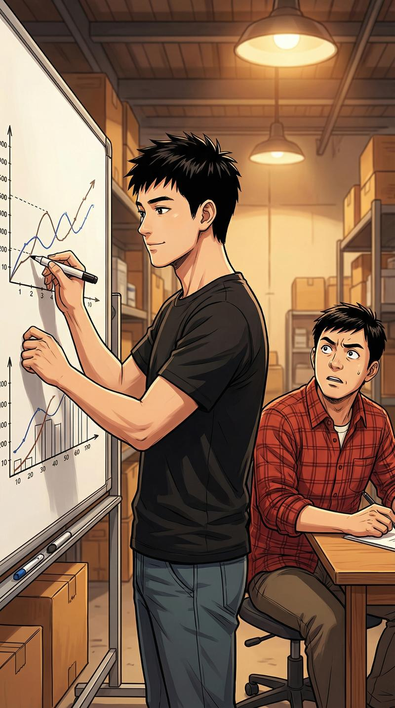
【侧面双人构图 / 白板前】
我花了二十分钟接入马磊的仓储数据。算法跑出来的第一组结果，马磊的表情开始变了——从"客套"变成"真的假的"。
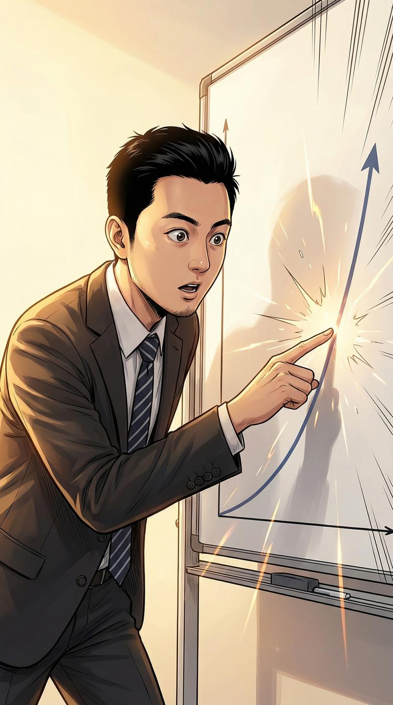
【侧面 / 同一场景继续】
曲线在白板上画出一条漂亮的上升弧线。
配送效率提升……百分之五十五？？
比鸿蒙那个方案高二十个百分点？？
马磊从椅子上弹了起来，凑到白板跟前，几乎贴上去用肉眼验证数字。
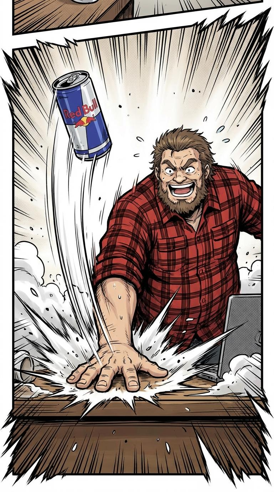
【仰视 / 马磊拍桌】
咚——！
马磊一巴掌拍在桌上，震得红牛罐跳了起来。
兄弟，签！
停了一秒，又加了一句：
但是——我也要一年免费。
……我就知道。
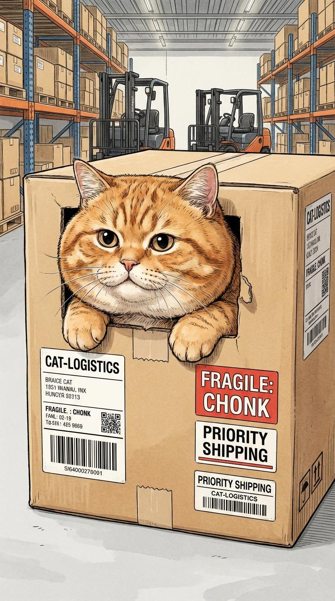
【特写 / 物流箱内】
正谈到价格，身后传来一阵窸窸窣窣。
大橘不知道什么时候钻进了物流箱迷宫——然后卡在了一个明显太小的纸箱里。只有圆滚滚的大脸和两只前爪露在外面，表情一本正经：
……这是市场调研。
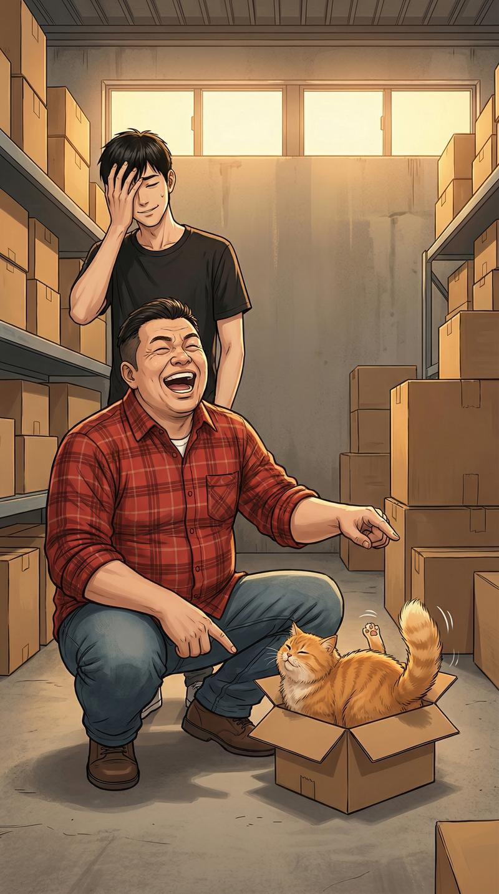
【全景 / 略俯拍】
马磊笑得前仰后合，蹲下来看大橘：
哈哈哈哈你们公司连质检猫都有？！
我在后面捂脸。价格还没谈完呢……
不过，看马磊笑成这样——好吧，大橘可能才是我们团队隐藏的商务总监。
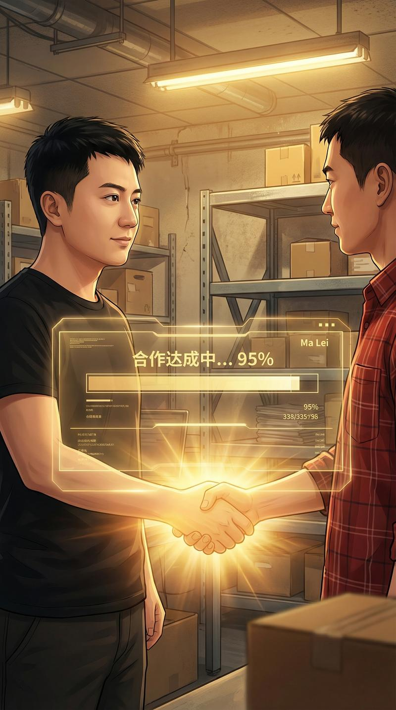
【中景侧面 / 握手+HUD叠加】
最终以"半价六个月"成交。马磊痛快地签了合同。
握手的瞬间，我感到一股暖流涌入——
第一步。还有两家。
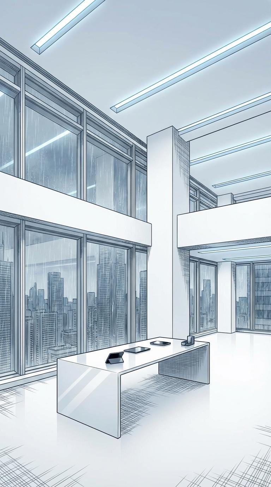
【远景 / 芯视科技办公室 / 极简风格】
第二个目标：「芯视科技」。AI视觉检测公司。
跟马磊的仓库比，这里像另一个世界——全白墙面，落地窗，每张桌子一尘不染。空气里飘着一股冷淡的秩序感。
这种公司的决策者，不会被热情打动。得用逻辑。
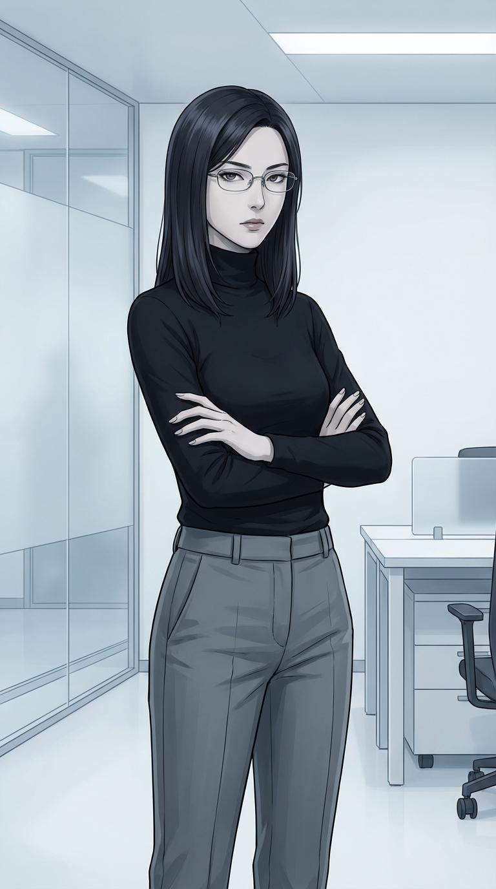
【中景肖像 / 陈灵芝出场】
CEO陈灵芝。海归博士。齐肩直发，金属框眼镜，黑色高领。
说话的时候几乎不动表情，像是把感情全锁在某个加密文件夹里了。
朱总，给你十五分钟。超过不送。
……严格到秒。
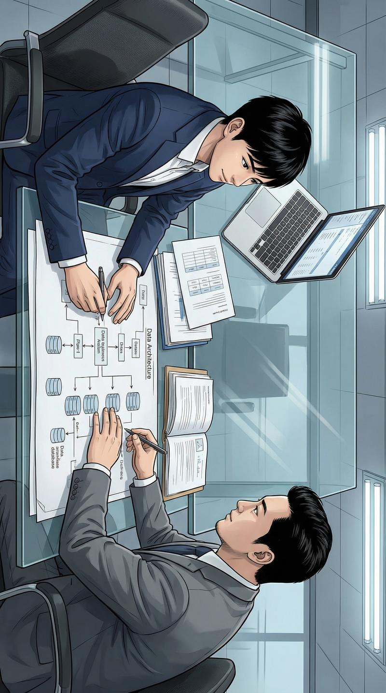
【俯拍 / 玻璃会议桌】
我用「商业直觉」读取陈灵芝——她最担心的根本不是效率，而是数据安全。
芯视科技的客户有军工背景。数据出去一个字节都是事故。
所以我换了策略。不谈性能。直接切入数据安全。
陈总，我给你看一个东西——我们的数据私有化部署方案。你的数据，一个比特都不出你的服务器。
【特写 / 手部+架构图】
我在纸上画出服务器节点架构——每个节点旁边都标了盾牌图标和锁。
陈灵芝的手指开始松动。从交叉抱胸变成轻轻搭在桌沿上——这是我今天看到她最放松的姿势。
有戏。
【慢镜头特写 / 大橘跃起】
就在这个关键时刻——
大橘从不知道什么角落窜出来，一跃跳上了陈灵芝那张一尘不染的纯白办公桌。
橘色猫毛在空气中飘扬，像慢动作电影里的雪花，缓缓落在银色MacBook的键盘上。
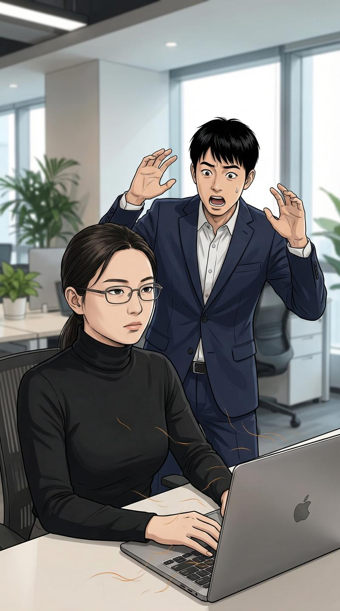
【侧面双人 / 喜剧对比】
陈灵芝面无表情地盯着飘落的猫毛。
我在她身后做出了一个"完了完了完了"的表情，双手举起表示我控制不了这只猫。
大橘坐在MacBook上，一脸正经地宣布：
安全检测。你的键盘间距不符合人体工学。
……我大概率要被赶出去了。
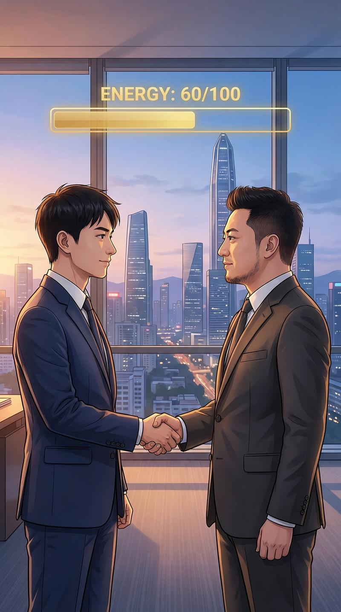
【中景 / 握手+进度条】
出乎意料——陈灵芝嘴角动了一下。那可能是她今天唯一的表情变化。
你这只猫……倒是挺有意思。合同发我，回头看看。
三天后，合同签了。
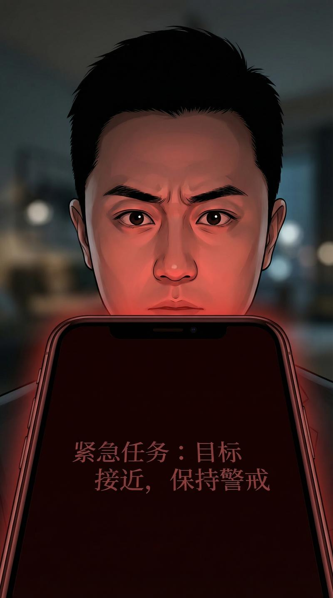
【特写 / 手机屏幕 / 背景虚化】
正准备攻克第三家，手机震动。
又是R。
我一愣。被动追踪程序显示这条消息来自——北京金融街附近。鸿蒙资本总部所在地。
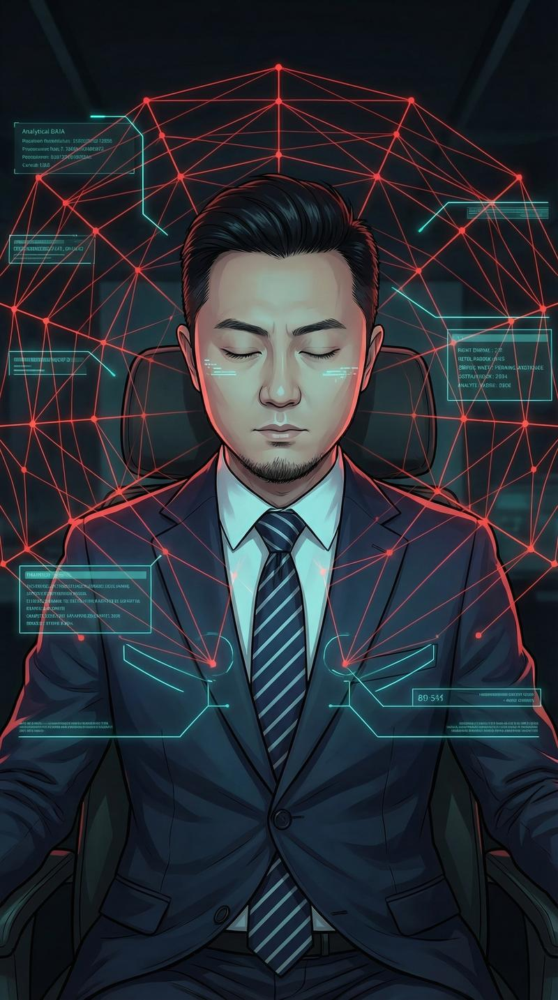
【中景 / 闭眼启动分析 / 红色蛛网数据】
我闭上眼，用掉了今天最后一次「商业直觉」——
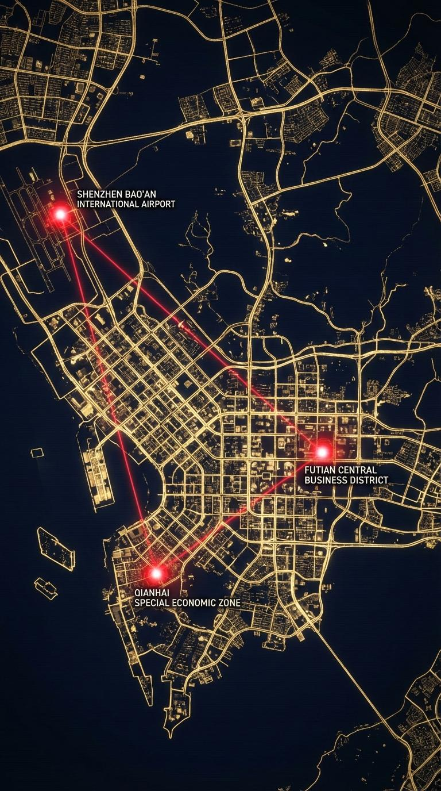
【俯视 / 全息城市地图】
分析结果令人不安。
赵鸿渊确实在放水。他根本不在乎这些小客户——他在等我暴露核心算法。
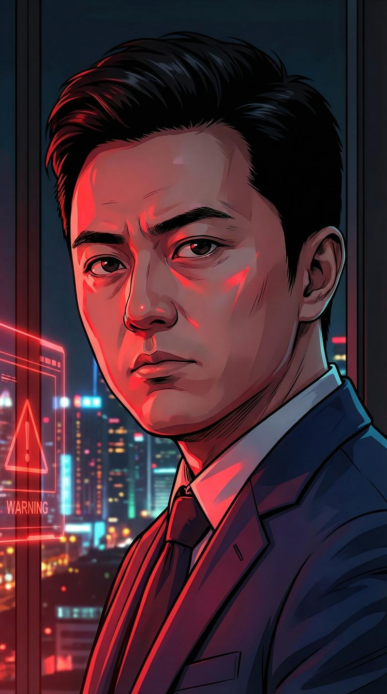
【俯视特写 / 红光映脸】
我每次给客户做demo——就等于把核心算法展示给他的眼线看。
之前签下的马磊、陈灵芝……他们公司内部可能已经有赵鸿渊的人了。
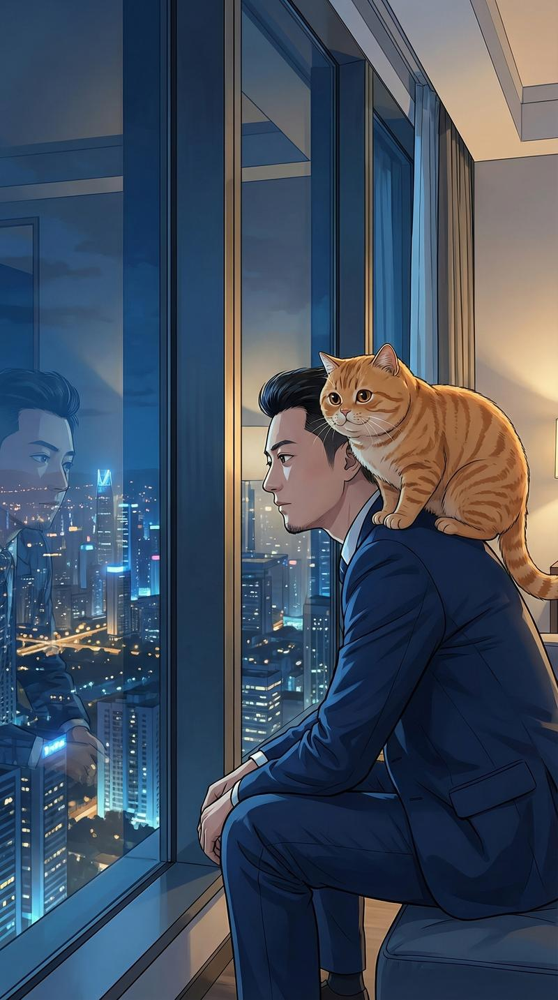
【全景侧面 / 窗前双人 / 夜景】
大橘跳上我的肩膀，罕见地没有开玩笑。
他在你身上装了「商业跟踪器」——你每次demo，就等于给他直播核心技术。
窗外深圳的灯火璀璨。但我现在看到的不是繁华——是暗处的眼睛。
第三家客户……不能再用常规方法了。
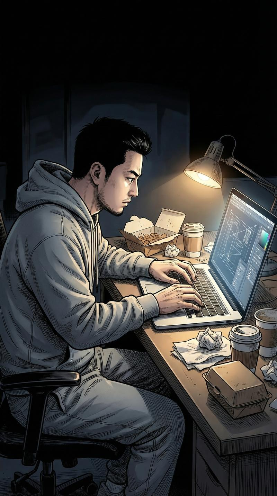
【中景 / 深夜办公室 / 只有屏幕光】
深夜两点。办公室里只剩我和屏幕的光。
知道了赵鸿渊的陷阱，但任务deadline逼近。还需要签第三家。
我改变了策略——不再做现场demo。
给第三家客户一个"黑盒方案"：他们上传数据到我的加密沙箱，算法在沙箱内运行，结果输出但代码不可见。
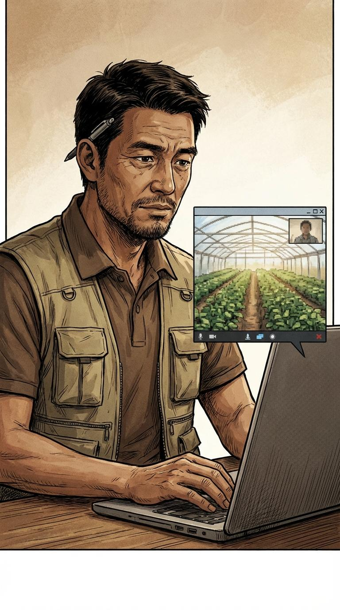
【中景 / 视频通话画面 / 温室背景】
第三家是做智慧农业的「绿脉科技」。CEO刘远航——晒得黝黑的前农学博士。视频那头背景是一片温室大棚。
朱总，我不懂什么算法不算法。你告诉我——我的菜能多卖多少钱？
接地气。好，我喜欢。
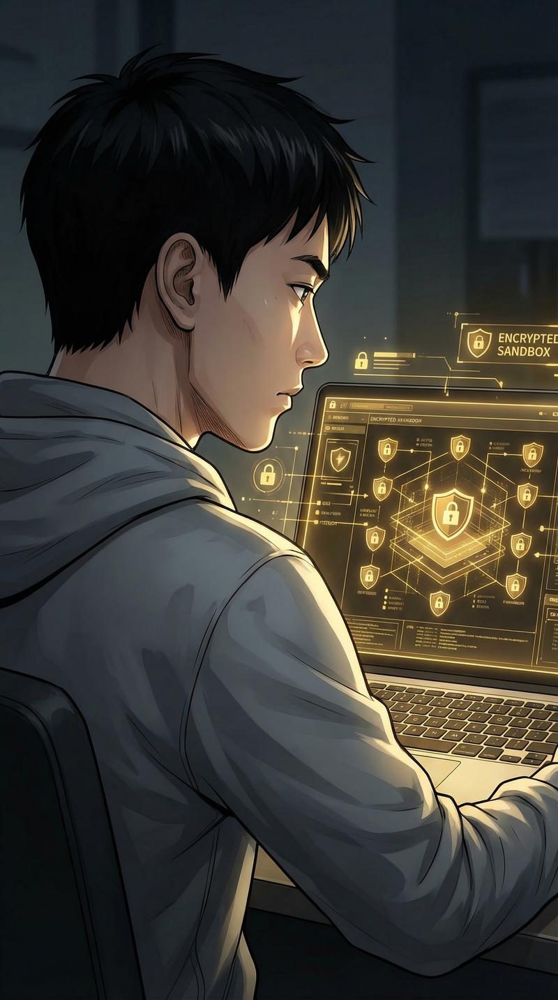
【过肩 / 屏幕架构图】
我给他看了加密沙箱的运作方式——数据进去，结果出来，黑盒中间谁也看不到。
刘总，你的数据在我的盒子里跑一圈，出来的只有结果。算法本身你看不到——但没关系，你也不需要看。你只需要看你的产量数字。
……行，听着挺靠谱。签了。
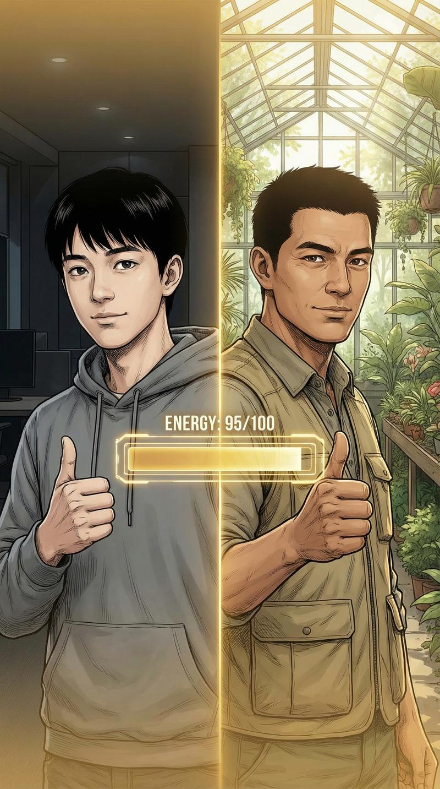
【分屏构图 / 左暗办公室·右绿温室】
但刘远航提了个要求——
我有个合作伙伴，是个大型农业集团。你能给我个演示账号，我带他们看看？
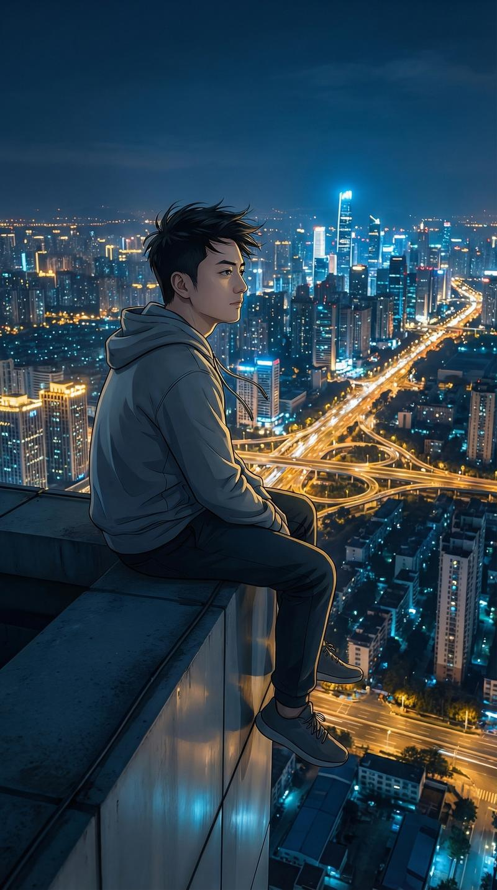
【远景 / 天台边缘 / 城市天际线】
签约成功。三家全部拿下。
95分够了，但差最后5点。系统说需要"商道顿悟"——不是签单能获得的，是思维层面的突破。
我坐在天台边缘，吹着深圳凌晨的风，想了很久。
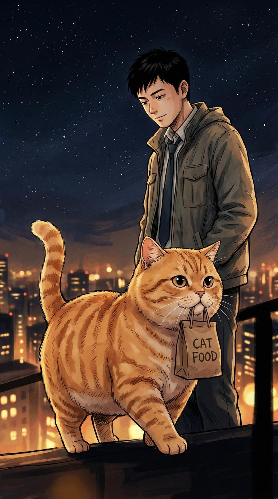
【中景 / 天台 / 夜空】
大橘叼着一袋猫粮慢悠悠走上天台，坐在我旁边。
三千年前我跟过一个修仙的老头，他悟道也是在屋顶上。
我转头看它。
不过他最后走火入魔了。
……你这是在鼓励我？
我是在告诉你别想太久。猫粮快吃完了。
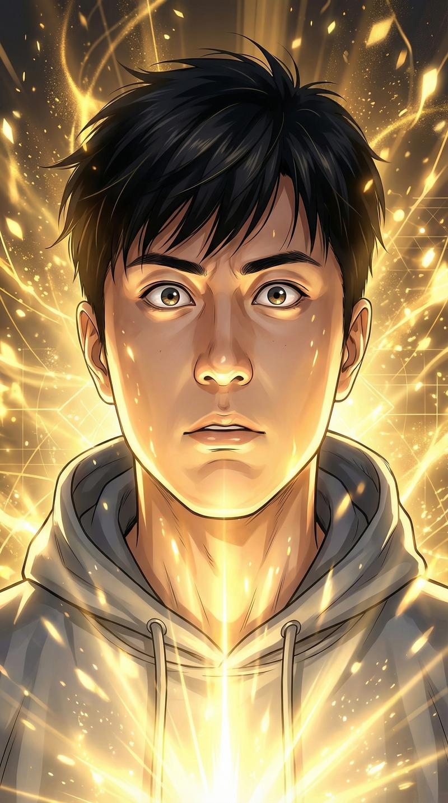
【特写 / 金光从内部亮起】
我突然想通了。
这三天我一直在想"怎么打败赵鸿渊"——但这是竞争思维。在他画好的赛道上跟他跑，赢了也不过是在他的规则里苟活。
真正的商道不是"打败对手"。
是创造增量。
赵鸿渊在存量市场里争夺。我应该去——创造一个他看不到的新市场。
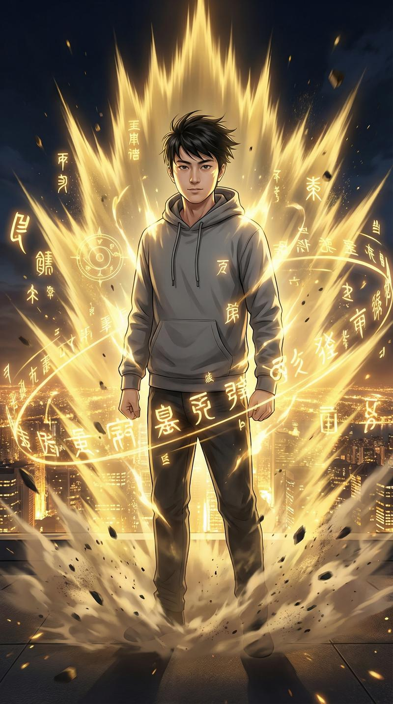
【仰拍全身 / 金色能量爆发】
灵气瞬间溢满——
灵气：100/100 → 重置 0/500
新能力解锁：「市场预见」
可以看到6个月内的市场趋势变化（每周1次）
⚠️ 副作用：突破瞬间所有电子设备重启
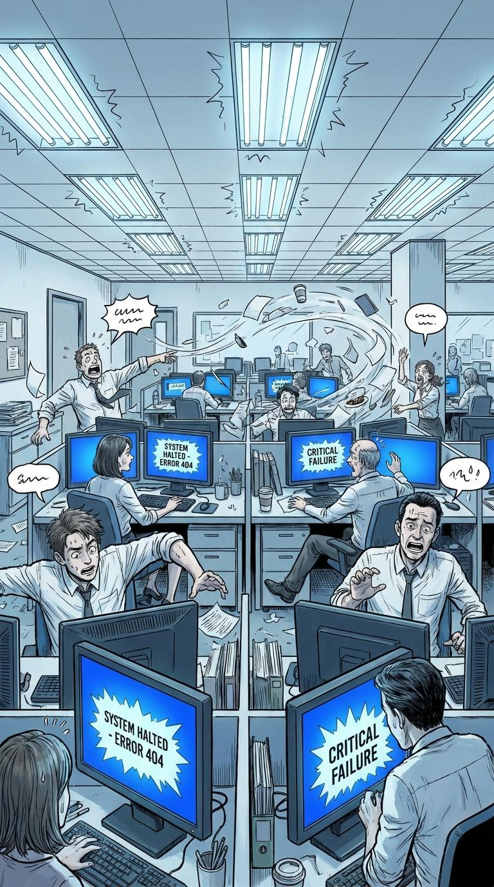
【广角 / 办公室电脑蓝屏】
滋——啪——
公司所有电脑同时蓝屏重启。
走廊里传来此起彼伏的惊叫声。
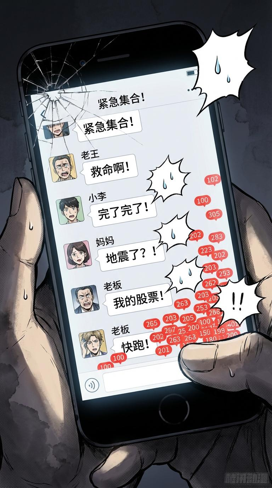
【特写 / 手机群聊消息】
手机群聊瞬间炸了——
林晚晴：谁动了服务器？！
周小鱼：我们的配送系统刚才断了三秒？？？
马磊：老弟，你们不会跑路了吧？？
陈灵芝：请解释。
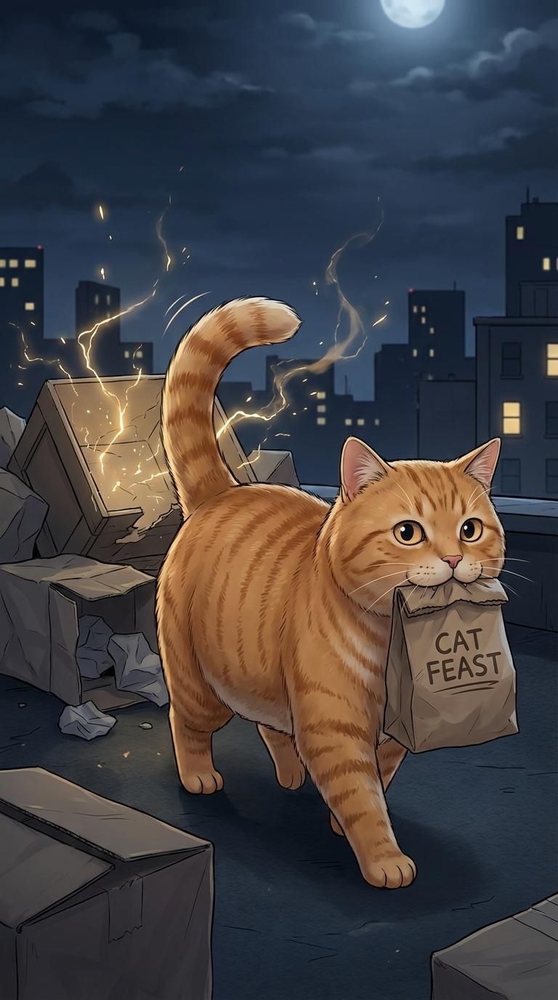
【中景 / 天台 / 大橘背影】
大橘叼着猫粮袋若无其事地走开，尾巴一甩一甩。
身后残余的金色能量还在空中噼啪作响。
跟我没关系。
……你明明就是灵兽，突破的副作用有一半是你的。
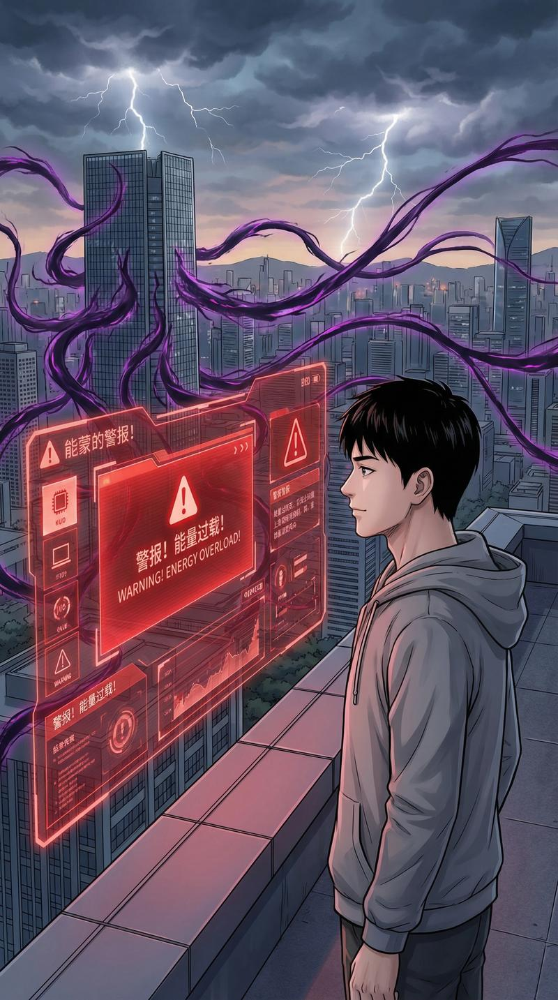
【远景 / 天台 / 红色HUD+暗紫触手】
但突破的喜悦没持续多久。
系统突然发出刺耳的警报——眼前的全息面板从金色变成血红色。
身后的深圳天际线上，鸿蒙大厦的黑色灵气像触手一样向四周蔓延。
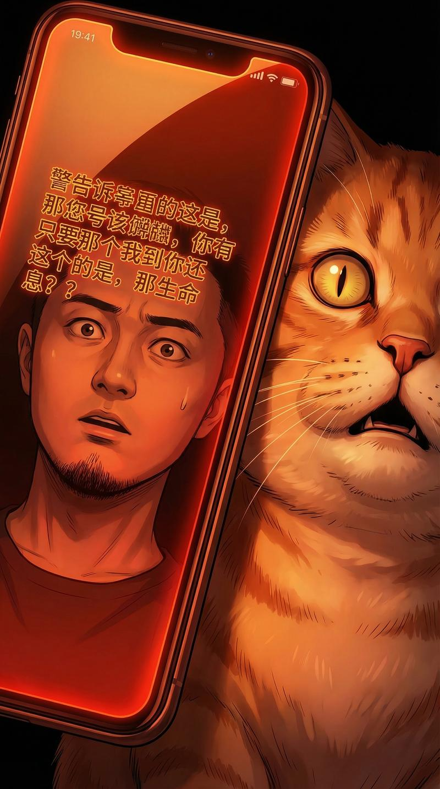
【极致特写 / 手机+猫瞳】
同时——手机再次震动。
大橘看了一眼手机，瞳孔骤然收缩成一条缝。
张卫？那个名字……我在三千年前的修仙记录里似乎见过。
筑基成功。但真正的危机才刚刚开始。
心魔种子已植入。14天倒计时。
而我的算法——真的是我自己写的吗？
张卫。我大学室友。三年没联系了。